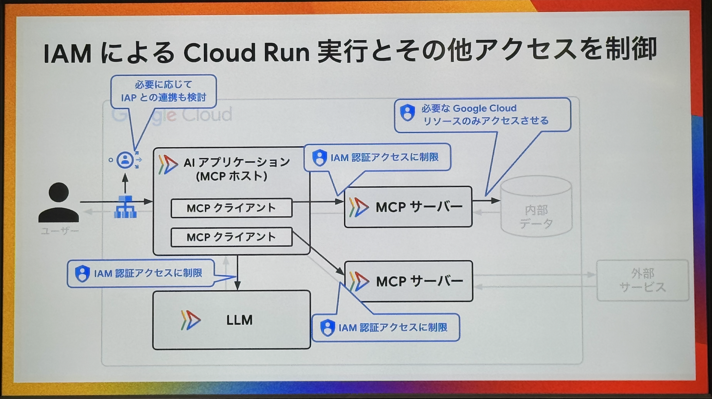
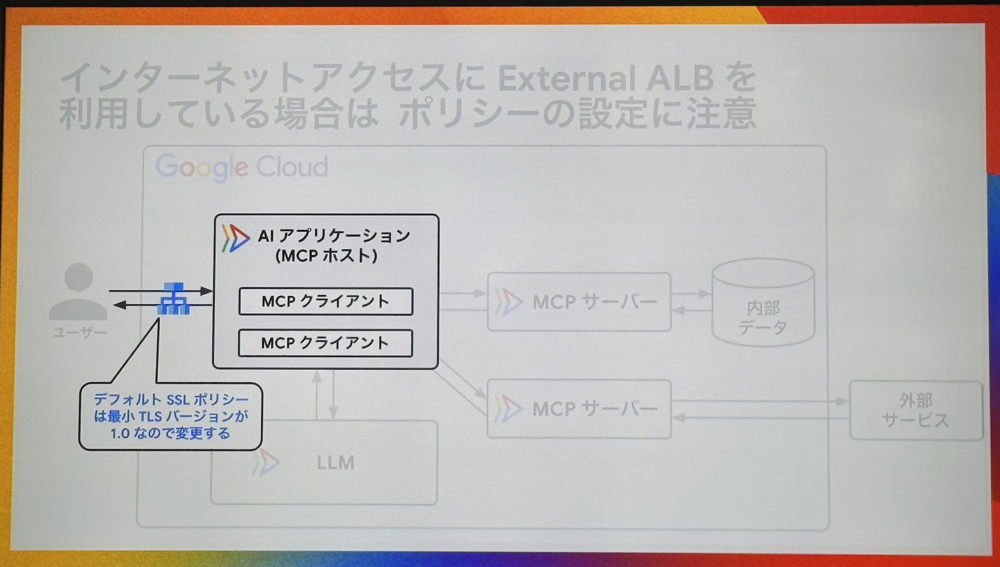
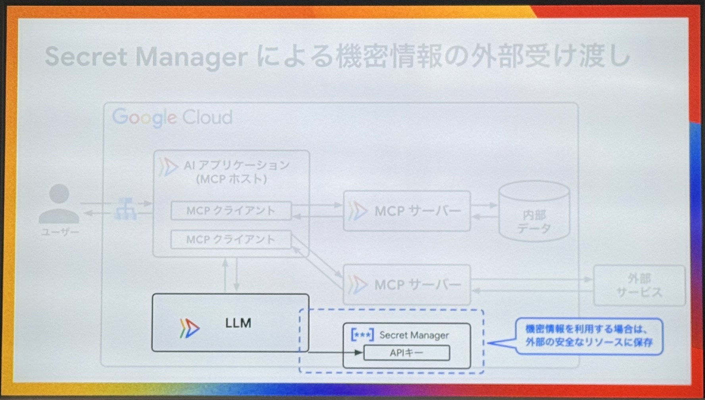
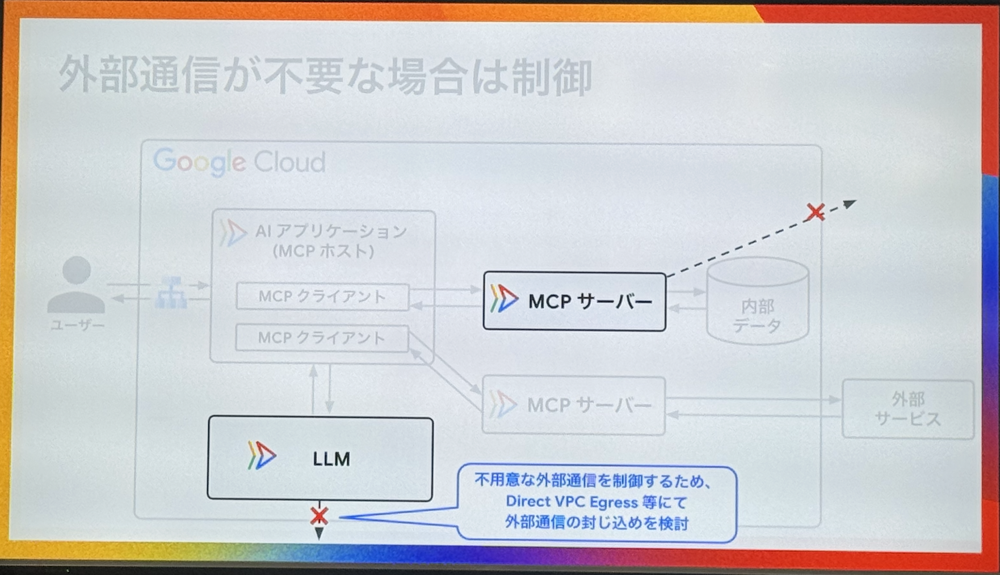
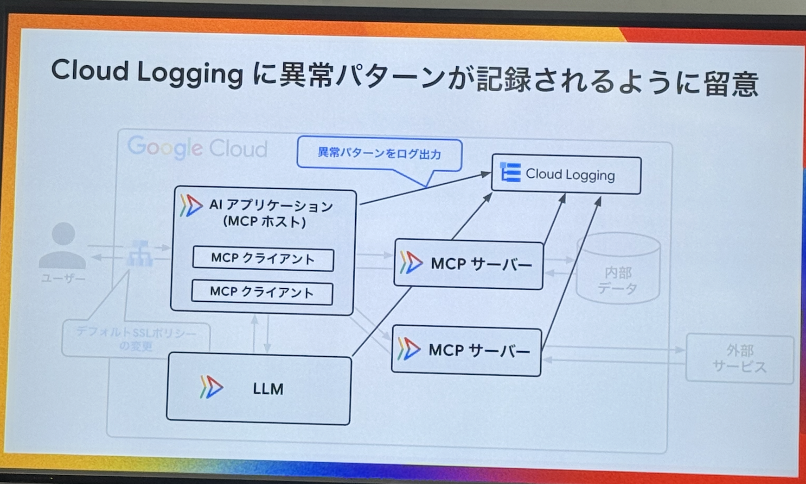
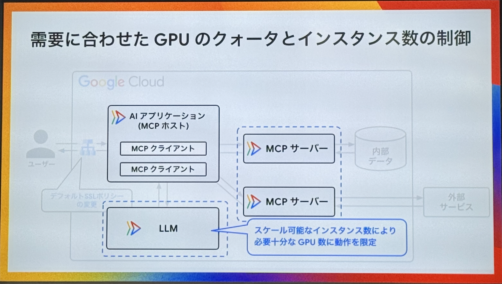

Cloud Run ではじめる
LLM/MCP サーバー運用と
セキュリティ対策
🧠
LLM（大規模言語モデル）とは
膨大なデータと深層学習により構築された言語モデル。「プログラムがたくさん言葉を学ぶことによって、人間のように文章を理解し作り出せるもの」。
例) Gemini 2.5, GPT-4.5, Claude Sonnet 4
🧩
MCP とは
AIモデルが外部のツールを呼び出すための標準化プロトコル。LLMが学習した以外の情報に対して、「LLMの代わりに外部から情報を提供する」役割を担うのがMCPサーバーです。
LLM / MCP サーバーが利用された処理フロー
ユーザーからのリクエストが、AIアプリケーション、LLM、MCPサーバー間でどのように処理されるのかをステップごとに解説します。
👤 ユーザー
↓
🤖 AIアプリケーション (MCPホスト)
MCPクライアント
MCPクライアント
↕
🧠 LLM
→
📦 MCPサーバー
📦 MCPサーバー
→
→
🗄️ 内部データ
🌐 外部サービス
なぜ、LLMやMCPサーバーを
使う場合にCloud Runを選択するのか？
一番のメリットはゼロスケール
- 未使用時はインスタンス数を0にできる（アイドルコストが発生しない）
- 散発的な利用特性と相性が良い（課金は秒単位）
LLMワークロード向けにGPUが利用可能
- GPUのドライバーインストール等は不要
- 数秒〜数十秒でデプロイ
- （注意）東京・大阪リージョンでは未対応（2025年7月23日時点）
必要なセキュリティ対策のアプローチ
LLM/MCPサーバーも、結局のところはWebアプリケーションです。従来のWebセキュリティ対策を基本としつつ、AI特有のリスクを考慮する必要があります。
Web Appセキュリティ × 生成AI Appセキュリティ
OWASP Top 10
不適切なアクセス制御
暗号化の失敗
インジェクション
セキュアでない設計
セキュリティ設定の不備
脆弱で古いコンポーネント
識別と認証の失敗
ソフトウェアとデータの整合性の失敗
セキュリティログとモニタリングの失敗
SSRF
OWASP Top 10 for AI Applications 2025
プロンプトインジェクション
機密情報の漏えい
サプライチェーン
データやモデルの汚染
不適切な出力のハンドリング
過剰な代理行為
システムプロンプトの流出
ベクトル化と埋め込みの脆弱性
不正確な情報
際限のない消費
Google Cloud観点の具体的なセキュリティ対策
IAM権限に関連した対策

通信・データの暗号化に関連した対策


意図しないデータアクセス制御に関連した対策

異常な振る舞いに対するロギング観点の対策

コスト消費を考慮したリソース制御に対する対策

セキュリティ対策に関するまとめ
- IAM認証によるCloud Runアクセス制御
- IAPを利用した認証
- External ALBにおけるデフォルトSSLポリシーの変更
- Secret Managerを利用した機密データの管理
- Direct VPC Egress等によるパブリックアクセスの制御
- 異常パターンのロギング
- インスタンス数やクォータ制御による想定外コスト発生の抑止